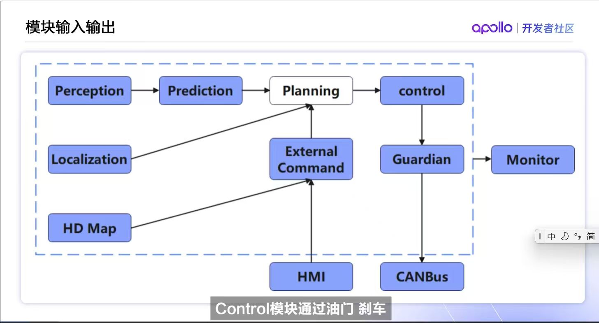
Apollo 自动驾驶系统的核心模块输入输出流程。
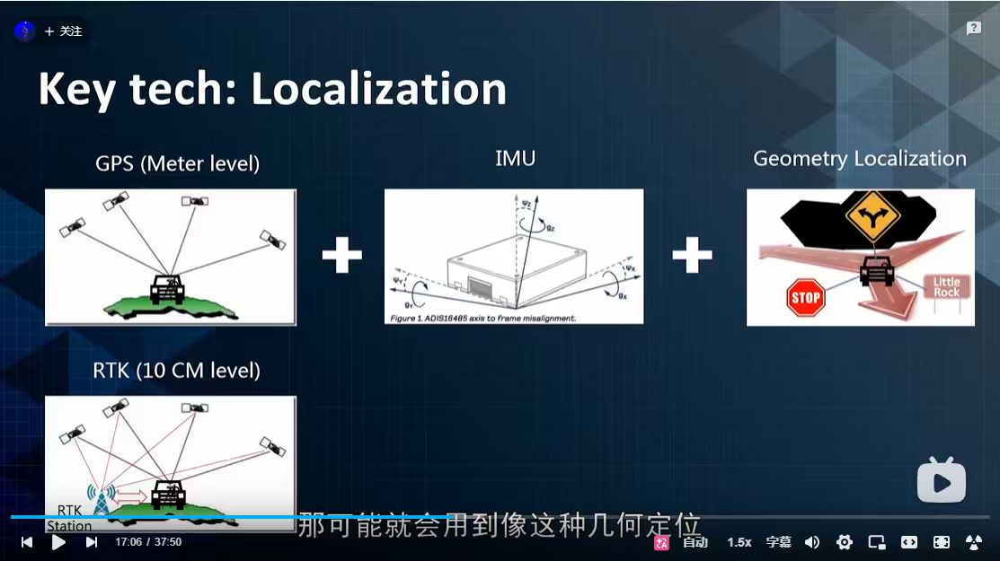
Apollo 的定位系统通过多传感器融合实现高精度定位。
Q: 定位融合技术包含哪些部分？
A: 主要包含 GPS (Meter level) + RTK (10 CM level) + IMU + Geometry Localization 的融合，以确保在不同环境下定位的稳健性和精度。
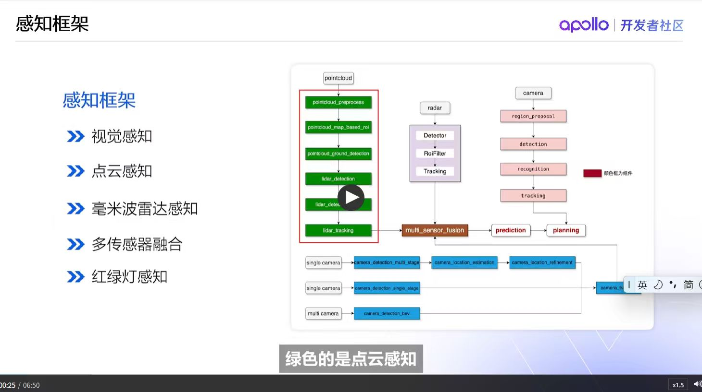
Apollo 感知系统架构，涵盖了视觉、点云、毫米波雷达等多传感器融合技术。
Q: 感知框架的各颜色模块代表什么？
A: 图中用不同颜色区分了感知子系统：绿色方框代表点云感知（Pointcloud Processing），紫色代表雷达感知，粉色代表视觉感知，最后通过 multi_sensor_fusion 模块进行融合，并输出至 prediction 和 planning 模块。
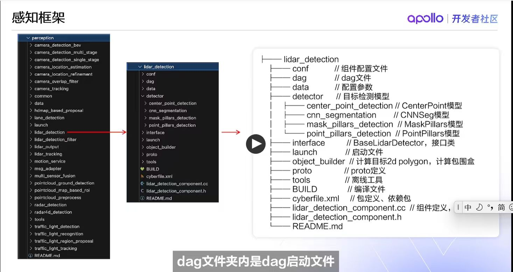
Apollo 感知模块中 lidar_detection 的代码目录结构解析。
Q: 该图主要展示了什么？
A: 展示了感知模块下 lidar_detection 的工程文件构成，包括：
- 核心配置/模型：包含 `conf` (配置), `dag` (启动 DAG), `detector` (含 CenterPoint, CNNSeg, MaskPillars, PointPillars 等检测模型)。
- 工程文件：`interface` (基类接口), `object_builder` (计算目标 2D 包围盒), `proto` (协议定义), `BUILD` (Bazel 编译文件)。
- 实现组件：`lidar_detection_component.cc/h`，即组件的核心实现逻辑。
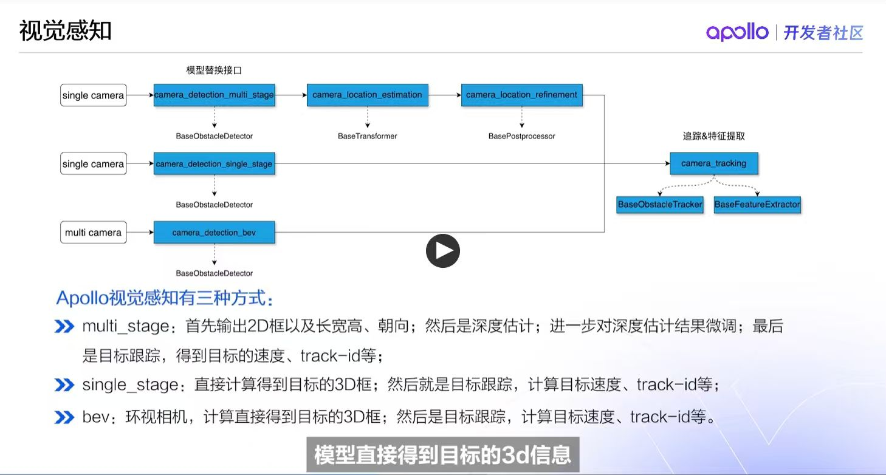
Apollo 视觉感知的核心处理方式与架构解析。
Q: Apollo 视觉感知的处理路径有哪些？
A: Apollo 提供了三种处理方式：
1. multi_stage：先输出 2D 框、长宽高、朝向，接着进行深度估计与微调，最后跟踪获得速度和 track-id。
2. single_stage：直接计算得到目标的 3D 框，随后跟踪计算速度和 track-id。
3. bev：基于环视相机，直接计算得到目标的 3D 框，并进行后续跟踪。这体现了从模型直接获取目标 3D 信息的能力。
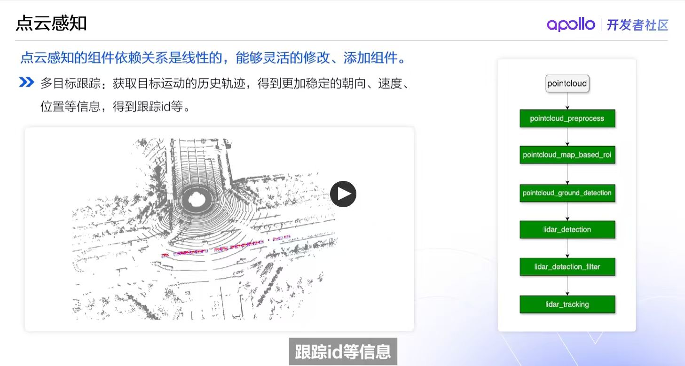
Apollo 点云感知模块的组件流程与功能。
Q: 点云感知的处理流水线是怎样的？
A: 该组件依赖关系为线性：
1. pointcloud: 原始输入
2. pointcloud_preprocess: 预处理
3. pointcloud_map_based_roi: 基于地图的 ROI 提取
4. pointcloud_ground_detection: 地面检测
5. lidar_detection: 目标检测
6. lidar_detection_filter: 结果过滤
7. lidar_tracking: 多目标跟踪，获取目标的历史轨迹、朝向、速度、位置及跟踪 ID 等信息。
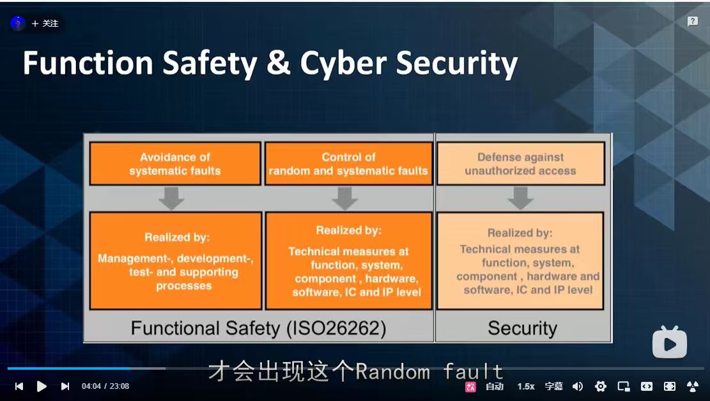
Apollo 对功能安全 (ISO26262) 与网络安全 (Security) 的区分与实现架构。
Q: 图像展示了安全领域的哪些核心概念？
A: 图像清晰区分了功能安全与网络安全：
- 功能安全 (Functional Safety): 通过管理、开发、测试等流程规避系统性错误，并结合系统级、硬件/软件、IC 等层面的技术措施来控制随机与系统性错误。
- 网络安全 (Security): 重点在于防御未经授权的访问，同样通过功能、系统、硬件、软件等全层面的技术措施来实现。
两者共同构建了自动驾驶系统的安全底座。
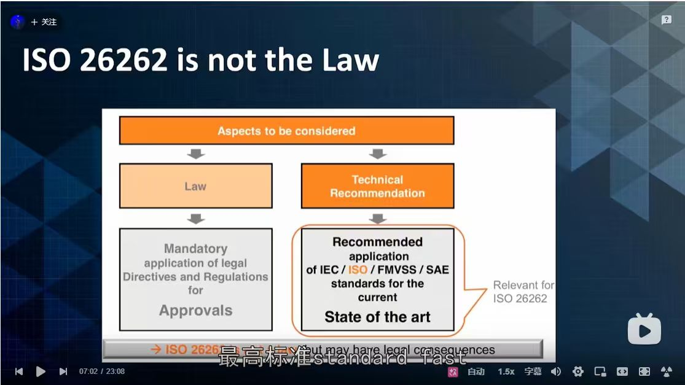
此图强调了 ISO 26262 的性质：它是一个技术推荐标准，而非强制性法律。
Q: 标准与法律在认证中的区别是什么？
A: 图像清晰地划分了两者：
- 法律 (Law): 是强制性的，主要用于法规和审批 (Approvals)。
- 技术推荐 (Technical Recommendation): 包括 IEC、ISO、FMVSS、SAE 等标准，代表了当前技术的领先水平 (State of the art)。
总结: 尽管 ISO 26262 本身不是法律，但在自动驾驶开发中遵循此类领先标准对于证明系统的安全性和合规性至关重要，且可能产生相应的法律影响。
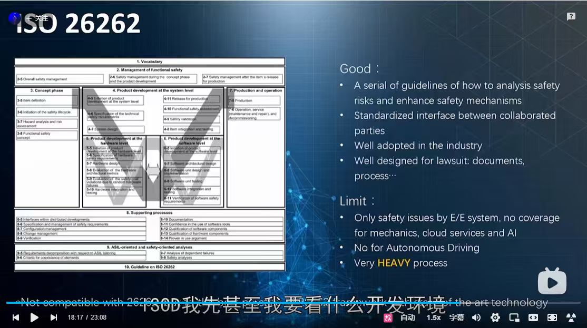
此图分析了 ISO 26262 在自动驾驶领域应用的局限性。
Q: 该标准在实际工业应用中的优缺点是什么？
A: 优点 (Good)：
- 提供分析安全风险与增强机制的指南。
- 为协作方提供了标准化接口。
- 行业采用度高，且对法律文档与流程设计友好。
局限 (Limit)：
- 仅针对 E/E 系统，不涵盖机械、云服务和 AI。
- 并非为自动驾驶 (Autonomous Driving) 设计。
- 流程过于繁重 (Very HEAVY process)。
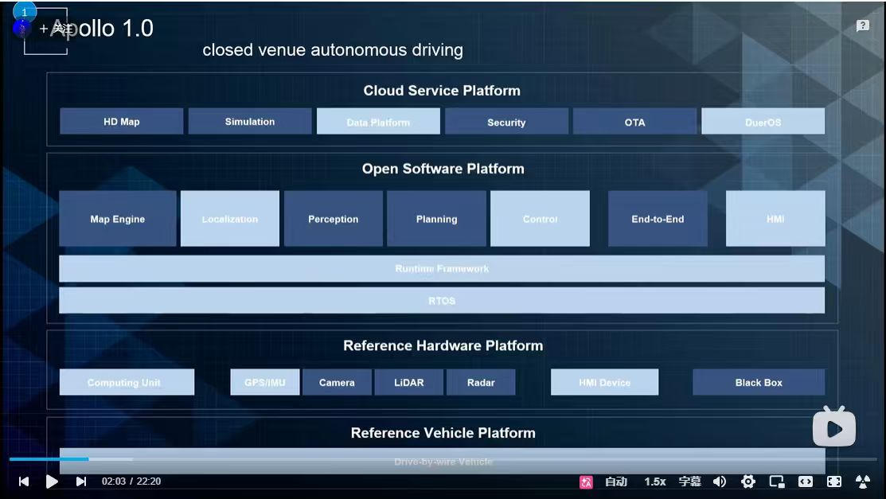
此图概括了 Apollo 1.0 版本（封闭场地自动驾驶）的整体技术栈。
Q: Apollo 1.0 的架构分层是怎样的？
A: 从上至下共四层：
1. Cloud Service Platform: 云服务平台，包含 HD Map, 仿真, 数据, 安全, OTA 等。
2. Open Software Platform: 开放软件平台，包括核心引擎 (Map, Localization, Perception, Planning, Control) 及 RTOS 运行时支撑。
3. Reference Hardware Platform: 硬件参考平台，含计算单元、传感器 (GPS/IMU, 摄像头, 激光/毫米波雷达) 及黑匣子等。
4. Reference Vehicle Platform: 车辆参考平台，即线控车辆 (Drive-by-wire Vehicle)。
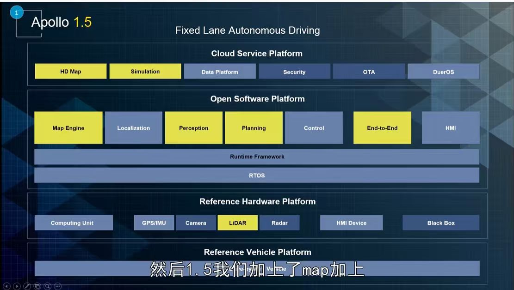
此图概括了 Apollo 1.5 版本（固定车道自动驾驶，Fixed Lane Autonomous Driving）的整体技术栈。
Q: Apollo 1.5 相较于 1.0 的架构演进是什么？
A: 架构演进主要体现在以下方面：
- 功能增强：在 1.5 版本中引入了 Map、End-to-End 以及 LIDAR 等核心组件。
- 平台分层：保持了云服务、开放软件、参考硬件及参考车辆四层结构。
- 关键能力：通过引入 End-to-End (端到端) 和 Map Engine 的强化，支持了更高级别的“固定车道自动驾驶”功能。
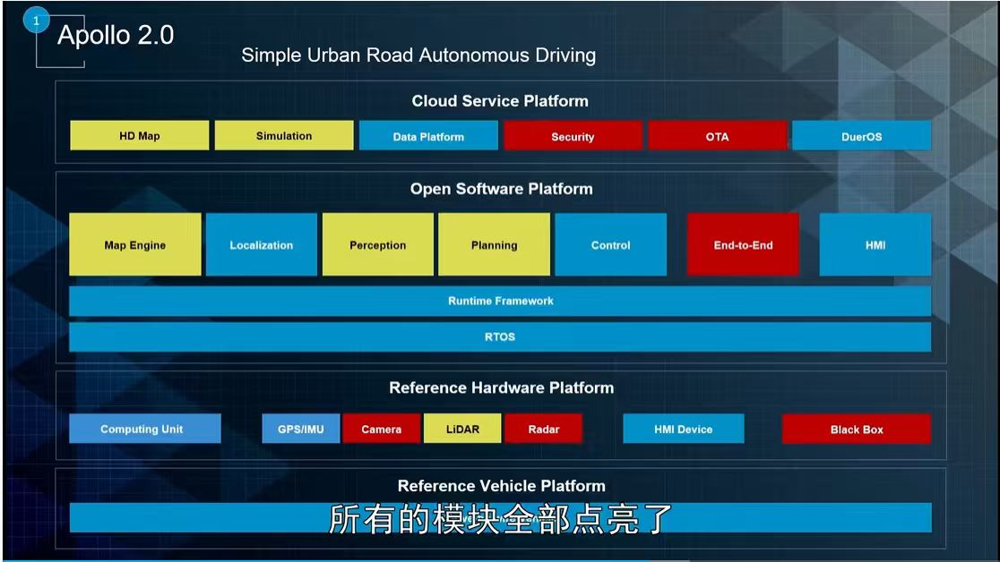
此图概括了 Apollo 2.0 版本（简单城市道路自动驾驶，Simple Urban Road Autonomous Driving）的总体架构。
Q: Apollo 2.0 架构的核心变化是什么？
A: 随着版本演进至 2.0，平台展现了极高的模块化程度：
- 能力全覆盖：正如图中底部所标，“所有的模块全部点亮了”，意味着在感知、定位、规划、控制等各维度已具备了城市道路环境下的完整处理能力。
- 平台化增强：云服务中增加了 DuerOS，软件平台增加了 HMI 交互模块，硬件层面整合了完整的传感器组（Camera, LiDAR, Radar）与黑匣子记录。
- 场景升级：支持 Simple Urban Road 自动驾驶，标志着 Apollo 从封闭/固定车道迈向更复杂的城市开放环境。
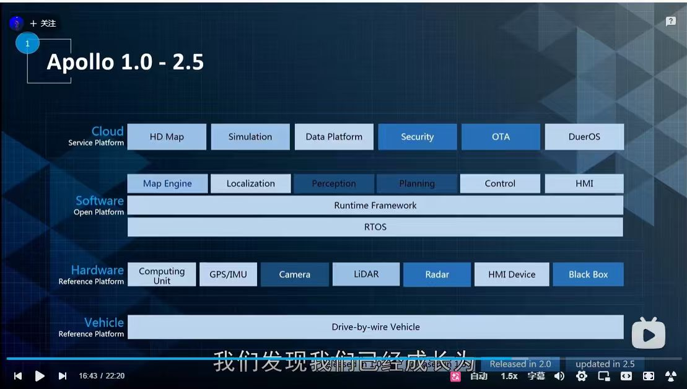
此图汇总了 Apollo 从 1.0 到 2.5 版本演进过程中的核心架构体系。
Q: 2.5 版本架构相比早期版本有何显著特点？
A: 随着版本迭代至 2.5，平台各模块的成熟度已达到极高水平：
- 全模块化支持：在云服务、软件平台、硬件参考及车辆平台四个维度上，Apollo 已经实现了全面的功能覆盖与模块化设计。
- 工程完备性：图中显示的各方框即代表了已成熟的工程模块（如 Cloud 中的 OTA, DuerOS；Software 中的 HMI, RTOS 支撑；以及 Hardware 中完整的传感器组）。
- 演进总结：这不仅是简单的版本升级，而是自动驾驶技术栈从原型验证走向工业级工程化实现的过程。
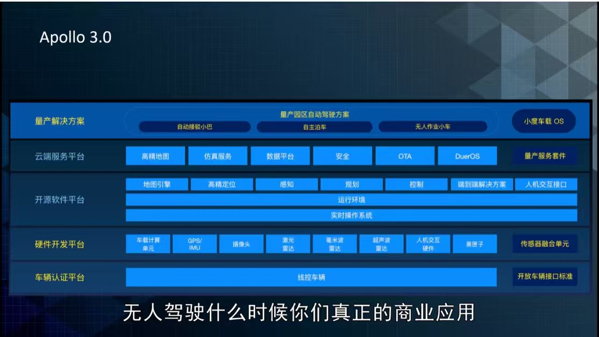
此图概括了 Apollo 3.0 版本（量产园区自动驾驶，Production-ready Campus Autonomous Driving）的总体架构。
Q: Apollo 3.0 在商业应用上有何突破？
A: 该架构重点迈向“商业应用”与“量产化”：
- 量产解决方案 (Production Solutions)：明确引入了“自动接驳小巴”、“自主泊车”、“无人作业小车”等具体的量产场景。
- 量产能力增强：在云端服务层面提供了“量产服务套件”，硬件层面增加了“超声波雷达”及“人机交互硬件”，体现了从技术到商业落地闭环的打通。
- 落地标志：正如标题下方的设问“无人驾驶什么时候你们真正的商业应用”，Apollo 3.0 的核心逻辑就在于通过量产化的园区解决方案，实现自动驾驶技术的初步商业应用。
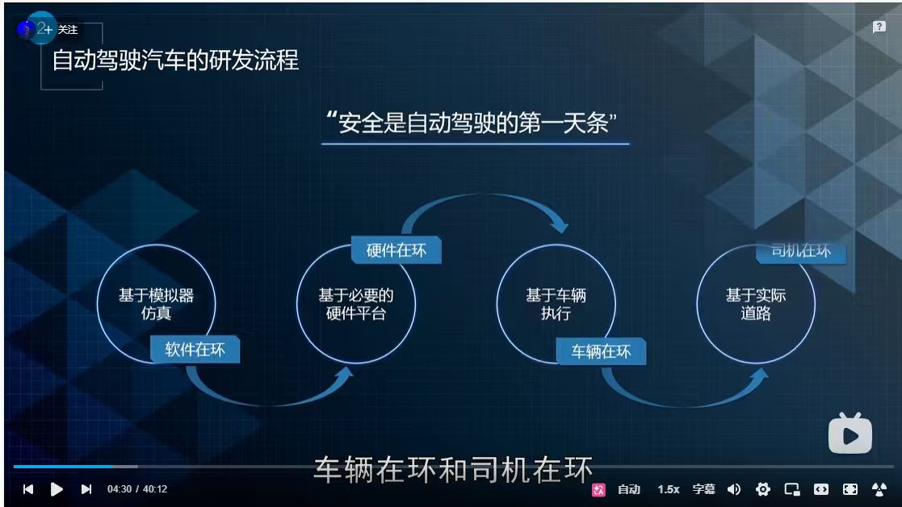
此图概括了自动驾驶研发的核心生命周期，强调了安全第一的理念。
Q: 自动驾驶的研发测试流水线包含哪些阶段？
A: 研发流程遵循“安全是第一天条”，从虚拟到现实共分为四个层级：
1. 软件在环 (SiL): 基于模拟器进行仿真测试，用于算法原型验证。
2. 硬件在环 (HiL): 基于必要硬件平台进行测试，验证硬件与算法的协同。
3. 车辆在环 (ViL): 基于车辆执行器进行实车封闭场地测试。
4. 司机在环 (DiL): 基于实际道路测试，引入人类驾驶员进行真实环境下的闭环验证。
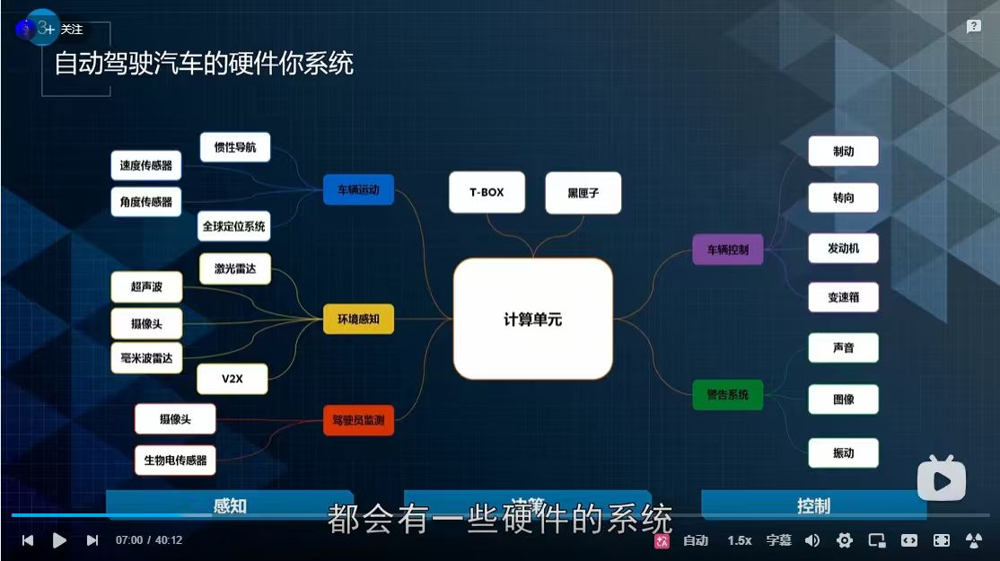
此图详细梳理了自动驾驶汽车的硬件系统组成与拓扑关系。
Q: 自动驾驶汽车的硬件系统主要由哪几部分构成？
A: 系统以计算单元为中心，向外辐射为三大功能板块：
1. 感知层 (左侧): 通过传感器（速度/角度、惯导、GPS、激光雷达、超声波、摄像头、毫米波雷达、V2X、生物电传感器）获取车辆运动、环境感知及驾驶员监测数据。
2. 计算单元 (中心): 接收各传感器信息，并作为决策中心连接控制与感知系统。
3. 控制层 (右侧):
- 车辆控制: 对制动、转向、发动机、变速箱进行硬件执行控制。
- 警告系统: 通过声音、图像、振动提供人机交互警告。
此外，T-BOX 和黑匣子作为外部数据通讯与记录单元接入。
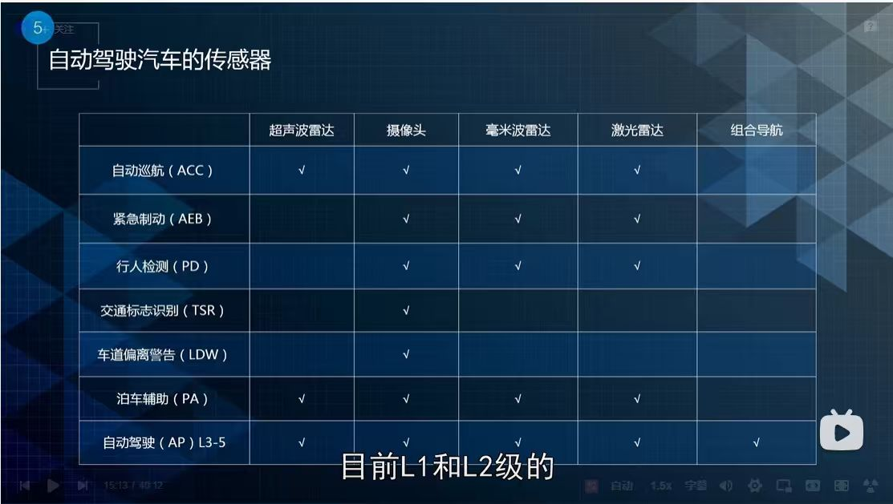
此图详细展示了不同自动驾驶功能对传感器的依赖程度。
Q: 传感器与功能之间有什么依赖关系？
A: 图像通过矩阵形式揭示了传感器组合与功能等级的演进：
- 核心功能覆盖：ACC、AEB、PD (行人检测) 等高级驾驶辅助功能依赖于“超声波雷达 + 摄像头 + 毫米波雷达 + 激光雷达”的深度融合。
- 感知单点依赖：TSR (交通标志识别) 与 LDW (车道偏离警告) 目前主要高度依赖摄像头。
- 高阶自动驾驶：L3-5 级别的自动驾驶，在融合了前述所有传感器基础上，必须引入“组合导航 (GNSS/IMU)”以实现车辆的绝对定位与姿态解算，体现了从辅助驾驶到自主驾驶的核心技术跨越。
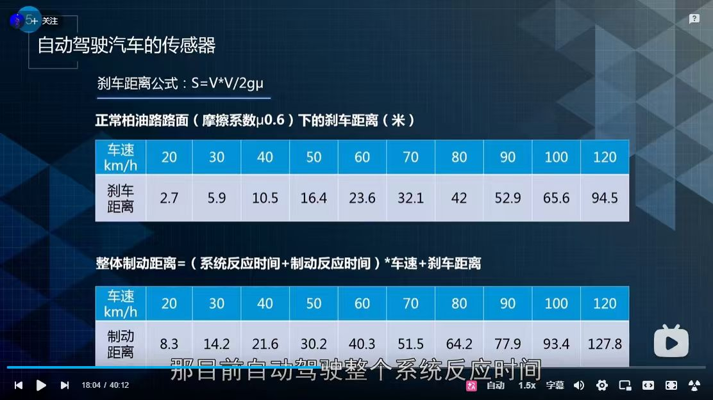
此图分析了在不同车速下，自动驾驶汽车的制动距离与影响因素。
Q: 该数据图表揭示了哪些关键点？
A: 图表量化了从车速到制动安全的物理过程：
- 物理极限：列出了在摩擦系数 μ=0.6（正常柏油路）下，车速 20-120 km/h 的理论物理刹车距离（公式 S=V²/2gμ）。
- 系统总制动距离：引入了“系统反应时间”与“制动反应时间”，展示了包含感知与执行滞后在内的真实整体制动距离 (Total Braking Distance)。
- 关键结论：制动距离与车速的平方呈正相关，随着车速上升，系统总制动距离显著增加（如 120 km/h 时制动距离达 127.8 米），这强调了自动驾驶系统在感知延迟与硬件执行性能上的优化对于安全性至关重要。
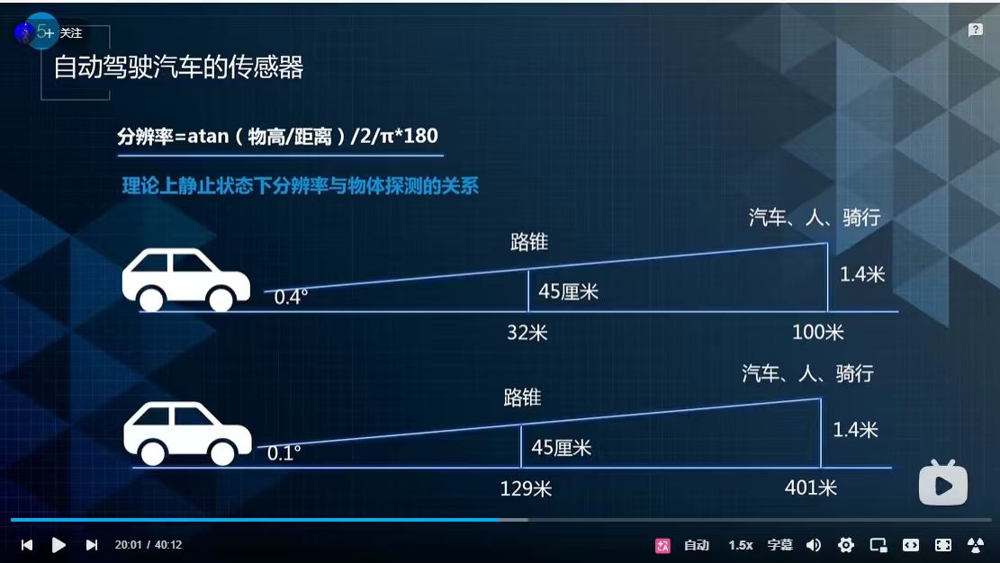
此图分析了传感器分辨率 (Resolution) 对物体探测距离的决定性影响。
Q: 传感器分辨率如何直接影响探测距离？
A: 图像通过对比展示了角度分辨率的重要性：
- 公式定义: 分辨率 = $atan(\frac{\text{物高}}{\text{距离}}) / \frac{2}{\pi} * 180$。
- 对比实验：
- 0.4° 分辨率: 在 32 米处即可分辨 45cm 的路锥，在 100 米处可分辨 1.4m 的目标（如人、骑行者）。
- 0.1° 分辨率: 探测能力大幅提升，在 129 米处可分辨 45cm 的路锥，在 401 米处即可识别 1.4m 的目标。
总结: 传感器角度分辨率越小（精度越高），在相同目标高度下，其探测距离呈倍数增长，这是支撑高速自动驾驶环境感知的核心技术指标。
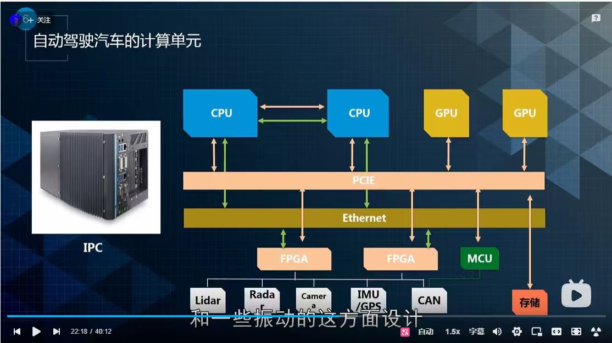
此图展示了工业级自动驾驶车载计算单元 (IPC) 的内部拓扑结构。
Q: 自动驾驶计算单元的核心设计逻辑是什么？
A: 该计算单元 (IPC) 采用了典型的异构计算架构：
- 高速总线：通过 PCIe 总线连接高性能计算模块（CPU 与 GPU），保证数据吞吐；通过 Ethernet 承担传感器数据分发与系统通讯。
- 异构计算中心：
- CPU & GPU: 负责复杂的环境感知模型推理、路径规划与决策任务。
- FPGA: 专门负责前端传感器数据的预处理，如图像信号处理 (ISP) 与 LiDAR 点云的初步过滤。
- MCU: 执行底层的实时控制指令与安全保护逻辑。
- 传感器连接：Lidar, Radar, Camera, IMU/GPS 等传感器数据均通过 Ethernet 或其他接口汇入处理。
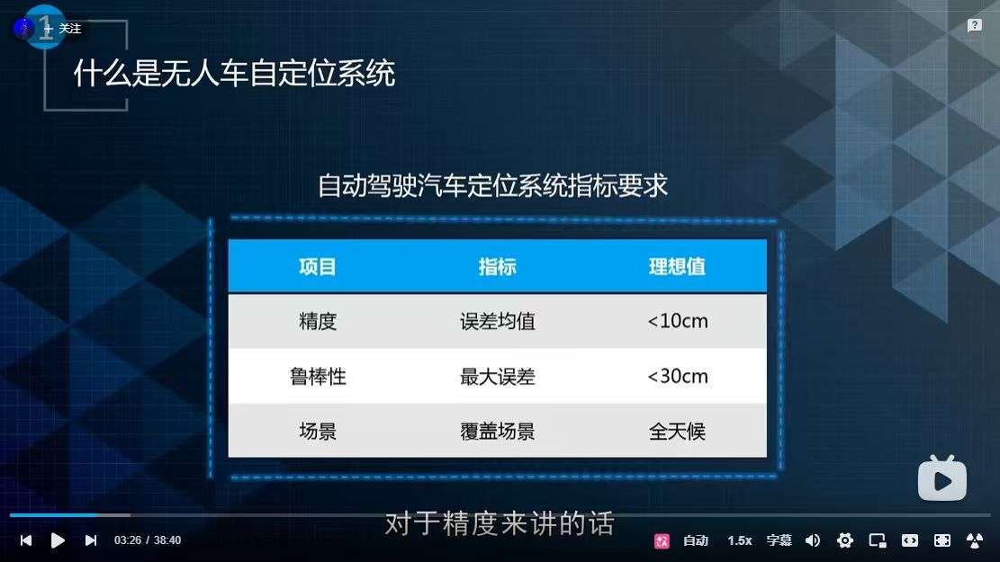
此图定义了自动驾驶汽车定位系统需满足的核心性能指标。
Q: 定位系统需要达到什么样的量化指标？
A: 定位系统必须满足三大维度的严格要求：
1. 精度 (Precision): 定位误差均值需控制在 < 10cm 以内，确保车辆行驶在正确车道。
2. 鲁棒性 (Robustness): 最大定位误差需控制在 < 30cm，保证在极端边缘情况下的系统可靠性。
3. 场景覆盖 (Scenario Coverage): 必须支持全天候 (All-weather) 场景的定位能力，确保在雨雪雾天及复杂路况下的定位连续性。
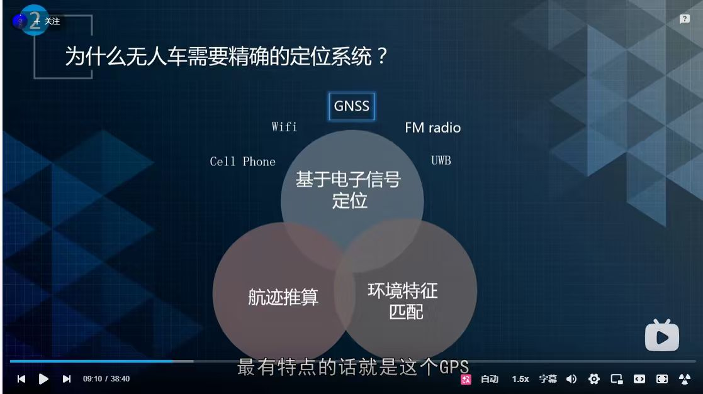
此图分析了无人车实现精确定位的三大核心技术路线。
Q: 自动驾驶定位的三大技术底座是什么？
A: 自动驾驶系统通过三种互补的技术路线实现高精度定位：
1. 基于电子信号定位 (Electronic Signal-based): 利用 GNSS (核心)、WiFi、FM 广播、Cell Phone 基站信号及 UWB 等外部射频信号进行定位。
2. 航迹推算 (Dead Reckoning): 通过车辆内部传感器（IMU/轮速计）实时追踪自身运动状态。
3. 环境特征匹配 (Environment Feature Matching): 将车辆观测到的环境特征与高精地图进行实时匹配，是实现车道级定位的核心。
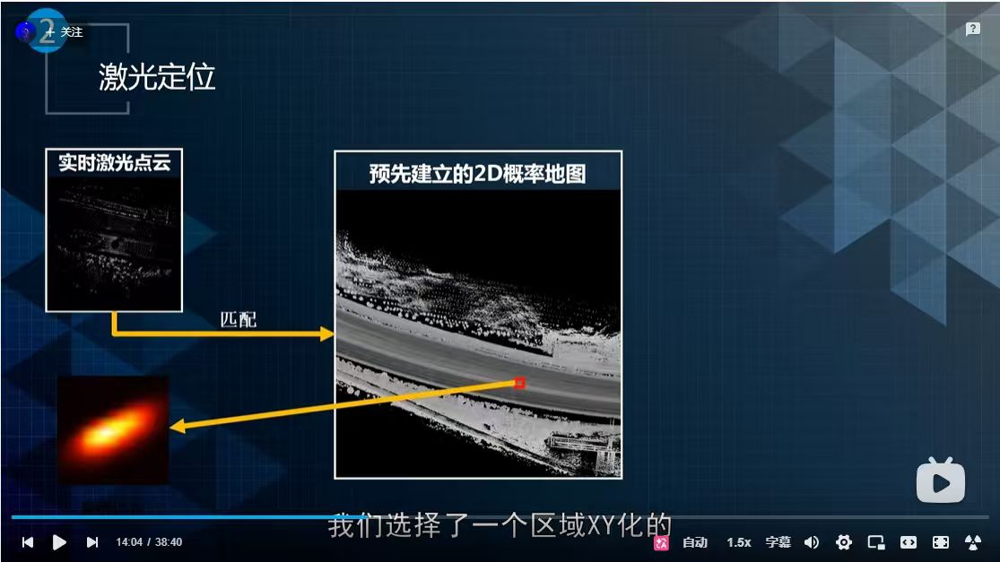
此图展示了基于激光点云匹配实现车辆精确定位的基本原理。
Q: 激光定位的核心匹配流程是什么？
A: 系统通过将实时扫描获取的点云信息与预先建立的 2D 概率地图进行高频配准：
1. 实时激光点云输入: 车辆通过 LiDAR 实时感知周围环境，获取点云数据。
2. 地图匹配: 将实时点云与“预先建立的 2D 概率地图”进行特征匹配与融合。
3. 定位结果输出: 根据匹配程度生成定位概率分布（如图左下角所示），通过计算该分布的中心点确定车辆在地图中的精确位置 (XY 坐标) 与姿态。
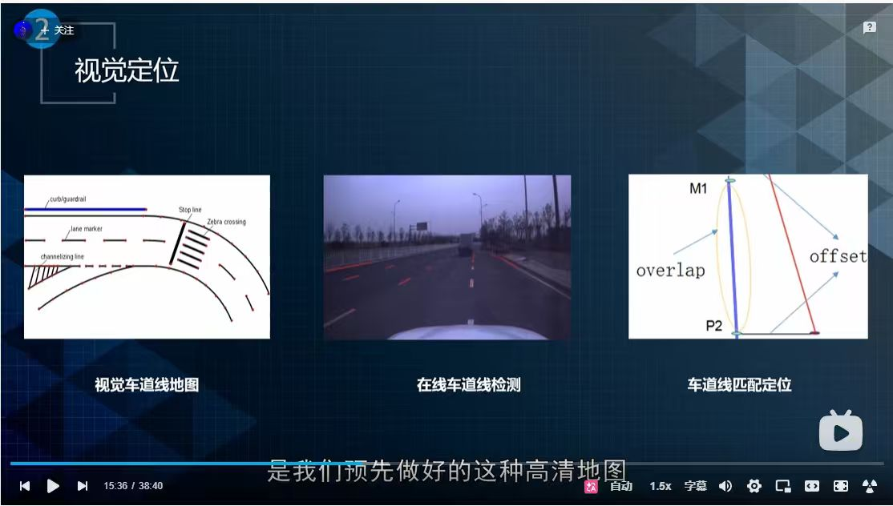
此图详细展示了基于车道线检测实现车辆高精度视觉定位的核心逻辑。
Q: 视觉定位是如何通过车道线实现的？
A: 视觉定位依赖于“高精地图特征”与“实时传感器观测”的匹配：
1. 视觉车道线地图: 预先构建包含车道线、路缘石、斑马线等丰富特征的高精地图。
2. 在线车道线检测: 车辆实时处理摄像头图像，提取当前场景下的车道线信息。
3. 车道线匹配定位: 通过计算实时检测的车道线与高精地图中对应特征之间的重叠度 (overlap) 和位置偏差 (offset)，解算车辆相对于车道中心线的精确横向位置与航向角，从而实现车道级视觉精确定位。
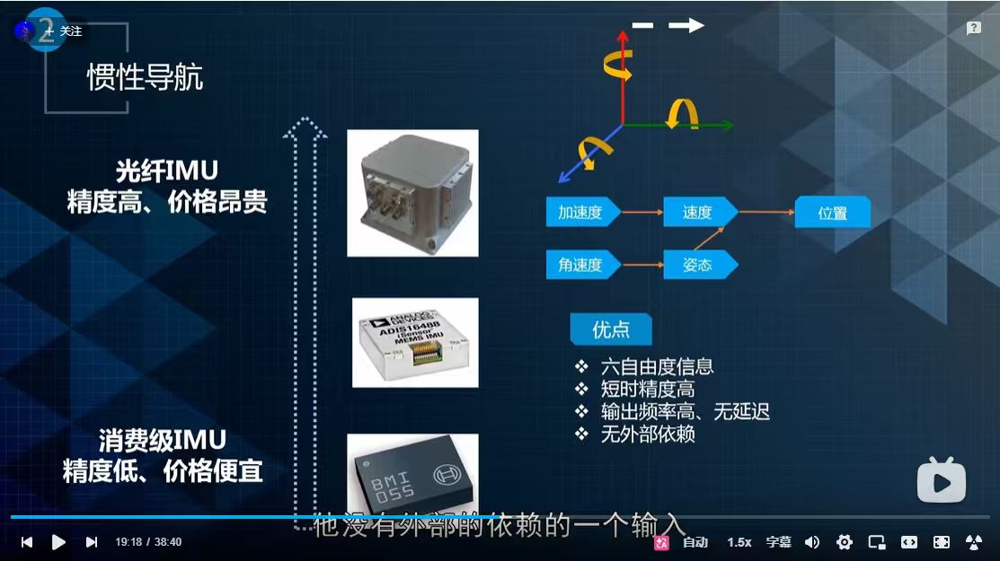
此图分析了惯性导航系统中 IMU 的分类及其技术优势。
Q: IMU 在惯性导航中如何分类？核心优势是什么？
A: 惯性导航系统主要通过 IMU 提供基础运动状态解算：
1. IMU 分类:
- 光纤 IMU: 精度高但价格昂贵，多用于高精度导航需求。
- 消费级 MEMS IMU: 精度较低，但具备显著的成本优势，广泛应用于大规模量产车型。
2. 核心逻辑: IMU 通过测量加速度和角速度，经积分推算得到速度、位置及姿态信息。
3. 主要优点:
- 数据丰富: 提供完整的六自由度 (6-DOF) 信息。
- 高性能: 具备短时高精度、高输出频率及零延迟特性。
- 自包含: 完全无外部依赖 (No external dependence)，在 GNSS 信号丢失时，是自动驾驶定位系统保持连续性不可或缺的备份手段。
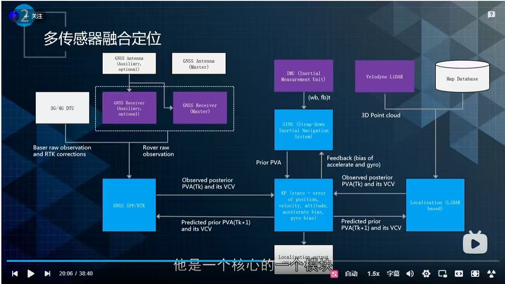
此图详细展示了 Apollo 定位系统中多传感器融合的逻辑架构。
Q: 多传感器融合的核心技术逻辑是什么？
A: 系统采用卡尔曼滤波 (KF) 作为状态估计的核心，融合了多种来源的数据：
- GNSS 输入: 通过 GNSS 天线与接收机获取原始观测值，配合 RTK 校正信息，输出 SPP/RTK 定位结果。
- 惯性导航输入: IMU 数据进入 SINS (捷联惯性导航系统)，提供初始 PVA (位置、速度、姿态)。
- 激光感知输入: Velodyne LiDAR 结合 Map Database 生成 3D 点云，通过 Localization 模块输出基于激光的观测结果。
- 卡尔曼滤波 (KF): 这是整个定位系统的核心，将 GNSS、SINS 和 LiDAR 的观测结果进行加权融合，校准加速度计与陀螺仪偏置 (bias)，并不断预测下一时刻 (Tk+1) 的最优定位状态 (Prior PVA)，从而输出高可靠性的最终定位结果。
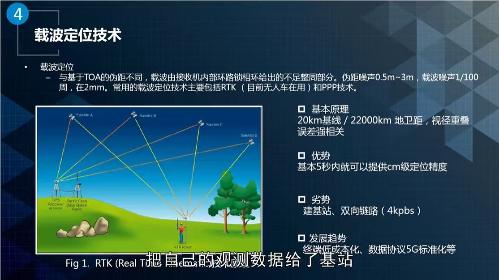
此图分析了基于载波相位测量的 RTK 定位技术原理与优缺点。
Q: 载波定位技术（特别是 RTK）的核心逻辑是什么？
A: 载波定位利用接收机环路锁相出的载波相位，其噪声远小于伪距：
- 核心原理: 相比基于 TOA 的伪距，载波相位噪声仅为 1/100 周 (约 2mm)。通过 20km 基线与 22000km 卫星轨道距离的“视径重叠”与误差强相关性进行差分修正。
- 优势: 能够在 5 秒内实现厘米级 (cm-level) 高精度定位，是目前无人车的主流定位方案。
- 劣势: 对基础设施要求高，需要架设基站及建立双向数据链路 (4kbps)。
- 趋势: 向终端低成本化、数据协议 5G 标准化方向演进。
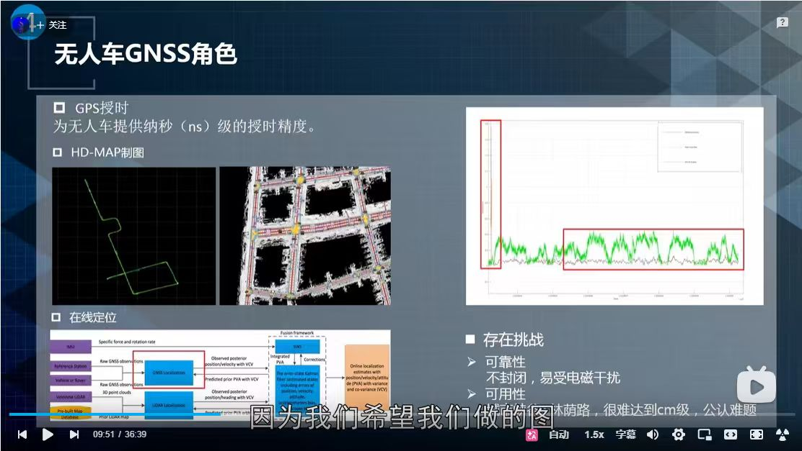
此图概括了 GNSS 在自动驾驶系统中的多重作用及其面临的现实挑战。
Q: GNSS 在无人车系统中扮演什么角色？面临哪些挑战？
A: GNSS 是自动驾驶定位体系的重要基础支撑：
1. 核心角色:
- 授时 (Time Sync): 为整车提供纳秒 (ns) 级的授时精度，确保多传感器融合的时间对齐。
- 制图 (HD-MAP): 为高精地图的构建提供关键地理坐标支撑。
- 在线定位: 作为多传感器融合框架中的重要观测源 (GNSS Observations)。
2. 挑战 (Challenges):
- 可靠性 (Reliability): 信号不封闭，极易受到电磁干扰 (Electromagnetic Interference)。
- 可用性 (Availability): 在城市峡谷或树荫遮挡路段，信号极易丢失，难以实现稳定的厘米级 (cm-level) 定位，这是该领域公认的技术难点。
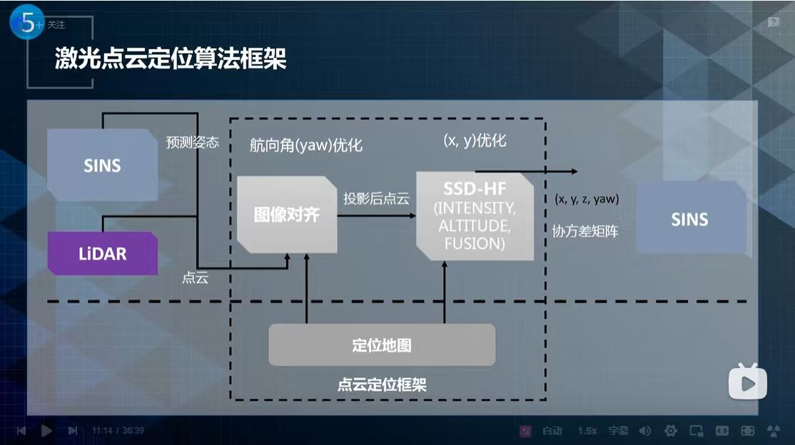
此图展示了 Apollo 定位系统中基于激光点云的算法框架逻辑。
Q: 激光点云定位框架的闭环逻辑是什么？
A: 该框架以 LiDAR 和 SINS (捷联惯性导航) 的协同为核心：
1. 输入数据: SINS 提供“预测姿态”，LiDAR 提供“实时点云”。
2. 核心组件 (点云定位框架内部):
- 图像对齐: 基于“定位地图”对实时点云进行投影对齐。
- SSD-HF (Intensity/Altitude/Fusion): 这是算法的关键，融合了点云强度、高度及多传感器特征，进行航向角 (yaw) 与 (x, y) 的精细化优化。
3. 反馈闭环: 最终输出 (x, y, z, yaw) 及“协方差矩阵”至 SINS，完成状态更新与闭环校准。
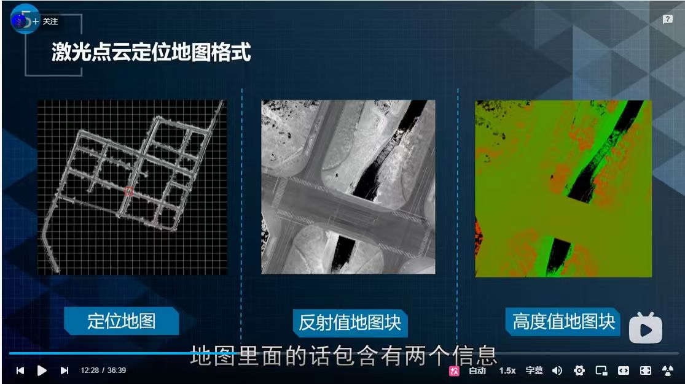
此图详细展示了 Apollo 定位地图的组成及其包含的核心数据信息。
Q: 激光点云定位地图是如何组织的？包含哪些核心信息？
A: 该定位地图采取网格化管理，每个地图块包含两种核心数据，用于实现高精度的特征匹配：
1. 反射值地图块 (Intensity Map): 记录了地物表面的激光反射强度，反映了地物的材质特性，是定位匹配的重要参考。
2. 高度值地图块 (Altitude Map): 记录了地物表面的海拔高度信息（常以颜色区分高度差异，如图中绿色表示地表，红色/橙色表示植被或更高物体），为三维空间对齐提供了关键的高程基准。
总结: 通过将这两种信息结合，系统能够构建起既包含材质纹理（反射率）、又包含空间结构（高度）的高性能定位地图，从而实现复杂环境下的稳健匹配。
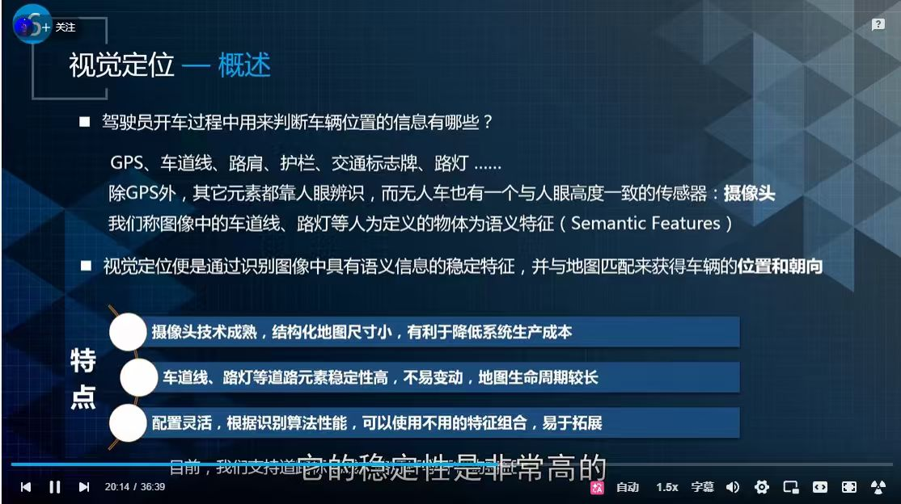
此图从类人感知视角出发，阐述了视觉定位的核心逻辑与优势。
Q: 视觉定位的核心逻辑与优势是什么？
A: 该方法通过模仿人眼的感知逻辑实现车辆定位：
1. 类人感知: 驾驶员依赖 GPS、车道线、路肩、路灯等特征定位，而摄像头正是无人车中实现该感知逻辑的传感器。
2. 语义特征 (Semantic Features): 将图像中人眼可定义的物体（如车道线、路灯）定义为“语义特征”，视觉定位即通过识别这些特征并与高精地图匹配，从而获取车辆的位姿 (位置与朝向)。
3. 三大特点:
- 低成本: 摄像头技术高度成熟，且结构化地图尺寸小，有助于降低系统生产成本。
- 高稳定性: 车道线、路灯等道路语义元素变动极少，使得地图具有更长的生命周期。
- 高扩展性: 特征组合配置灵活，可根据识别算法的演进，动态组合不同语义特征以提升定位性能。
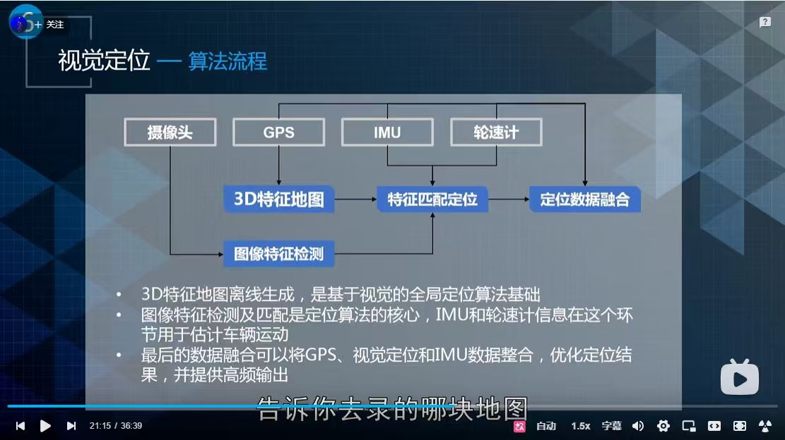
此图详细梳理了 Apollo 视觉定位系统的核心算法流水线。
Q: 视觉定位系统的算法流水线逻辑是怎样的？
A: 该系统结合了多传感器输入与离线地图数据：
1. 多源输入: 整合了摄像头、GPS、IMU 及轮速计四大传感器数据。
2. 核心流水线:
- 3D 特征地图: 由离线构建，作为视觉全局定位的基石。
- 特征检测与匹配: 摄像头进行在线图像特征检测，并结合 IMU 与轮速计的运动预测，与 3D 地图进行精确匹配。
- 定位数据融合: 最终将 GPS、视觉匹配结果与 IMU 数据进行融合，输出高频、高精度的定位信息。
总结: 图像特征检测与匹配是算法的核心，IMU 与轮速计则在其中发挥了关键的运动估计支撑作用。
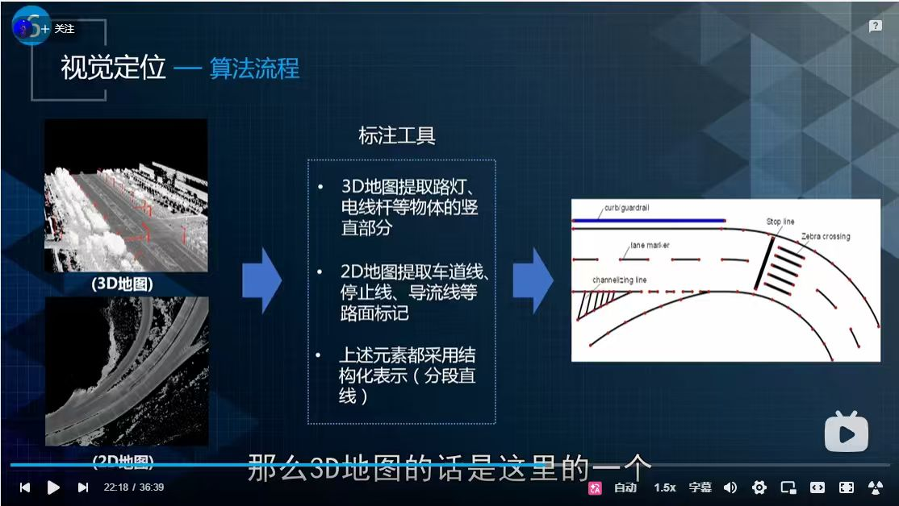
此图详细展示了视觉定位中高精地图特征的标注与结构化提取方法。
Q: 高精地图特征标注的核心逻辑是什么？
A: 系统通过对 3D 点云与 2D 路面数据进行结构化提取与标注：
- 3D 标注: 从 3D 地图中提取路灯、电线杆等垂直地物，利用其竖直属性作为空间定位参考。
- 2D 标注: 从 2D 地图中提取车道线、停止线、导流线等路面标识，作为车道级定位的关键特征。
- 结构化表示: 关键在于将上述地物与道路标记均转换为分段直线 (Segmented Lines)，这种结构化表示极大简化了在线视觉定位中的匹配与计算复杂度。
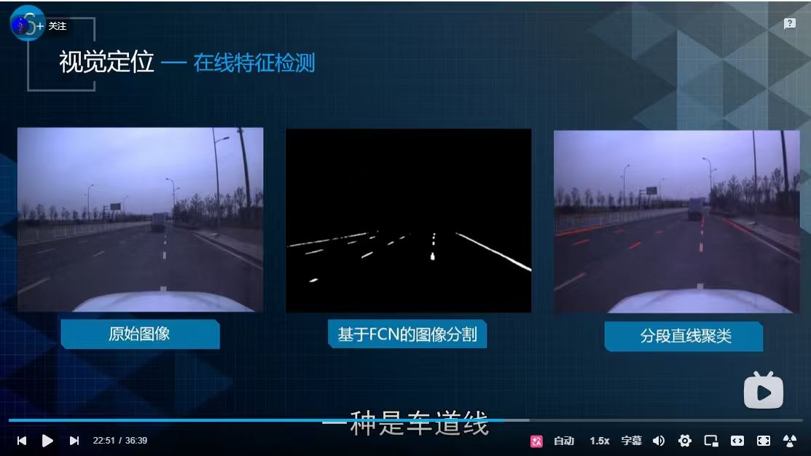
此图展示了视觉定位中车道线特征的实时在线检测流水线。
Q: 在线特征检测的核心处理流程是什么？
A: 系统通过三步实现对道路车道线特征的实时提取：
1. 原始图像输入: 获取车辆前视摄像头采集的实景图像。
2. 基于 FCN 的图像分割: 利用全卷积网络 (FCN) 对图像进行像素级语义分割，将车道线区域从复杂背景中提取出来。
3. 分段直线聚类: 对分割后的特征进行聚类与结构化处理，将其拟合为连续的分段直线，这不仅去除了噪声，也为后续与高精地图特征的精确匹配奠定了计算基础。
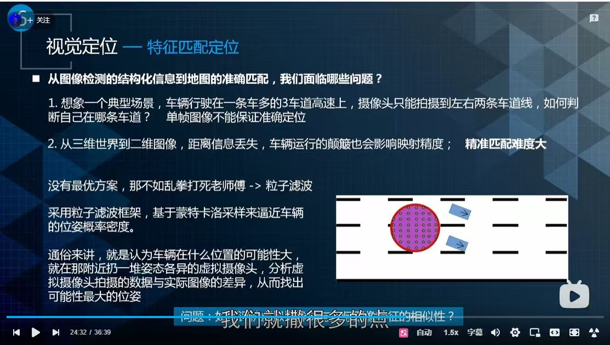
此图分析了视觉定位中特征匹配面临的现实挑战及其基于粒子滤波的解决方案。
Q: 视觉定位特征匹配面临哪些主要难点与解决方案？
A: 系统主要面临两个工程难点：
1. 多义性困境: 在多车道高速场景下，摄像头仅能捕捉局部车道线，导致车辆在各车道间的定位存在多义性。
2. 维数灾难与环境干扰: 三维世界到二维图像的投影丢失了距离信息，且车辆行驶时的颠簸会导致图像抖动，增加了精准匹配难度。
解决方案 - 粒子滤波 (Particle Filter):
系统放弃寻找单一最优解，转而采用粒子滤波框架：通过蒙特卡洛采样，在车辆可能存在的位姿位置附近“撒”一堆代表不同位姿的虚拟摄像头，通过对比虚拟采集数据与实际图像的差异，从而筛选出概率密度最大的一组粒子，即为车辆当前最可能的定位结果。
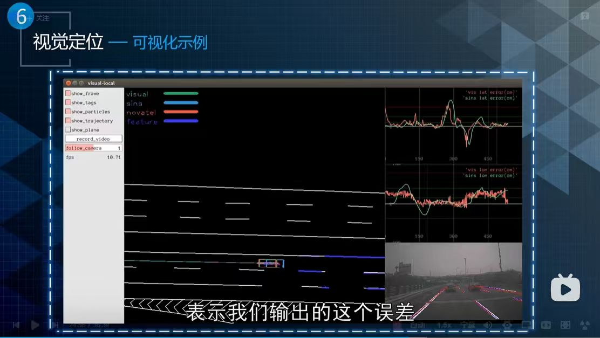
此图展示了视觉定位系统的实时可视化界面与误差对比数据。
Q: 视觉定位的可视化界面揭示了什么？
A: 界面实时反映了系统定位的稳健性：
1. 定位可视化: 左侧显示了车辆当前识别的车道线与定位结果（车辆坐标矩形框）。
2. 右侧误差曲线: 显示了 Visual (视觉定位) 与 SINS (捷联惯导) 在横向 (lateral) 和纵向 (longitudinal) 误差上的实时对比。
分析结论: 该曲线展示了视觉定位系统 (Visual) 能够有效修正惯导系统 (SINS) 的累计漂移误差。图中红色/绿色曲线重叠区域及局部波动，清晰地量化了视觉定位对于长期运行环境下导航系统漂移的补偿能力，验证了该方案在车道级定位中的高可靠性。
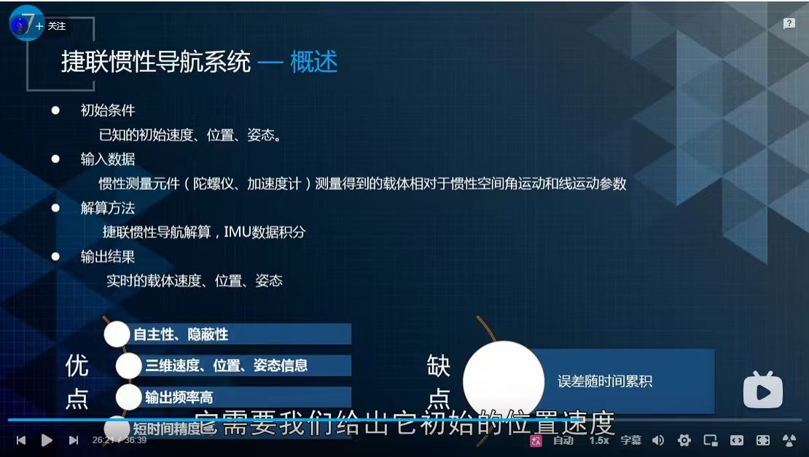
此图概括了捷联惯性导航系统 (SINS) 的核心技术逻辑、优缺点及工作原理。
Q: 什么是捷联惯性导航系统 (SINS)？其核心逻辑是什么？
A: SINS 是通过对 IMU 传感器数据进行实时积分来解算载体状态的系统：
1. 工作要素:
- 初始条件: 需要已知的初始速度、位置与姿态。
- 输入数据: 由 IMU (陀螺仪、加速度计) 测量的载体角运动与线运动参数。
- 解算方法: 通过捷联惯性导航算法，对 IMU 实时数据进行积分处理。
- 输出结果: 实时获取载体的速度、位置与姿态信息。
2. 优缺点对比:
- 优点: 具有极高的自主性与隐蔽性，能输出高频率的三维速度、位置及姿态信息，且短时间精度高。
- 缺点: 误差随时间累积，且解算需要精确的初始位置、速度及姿态信息作为起始输入。
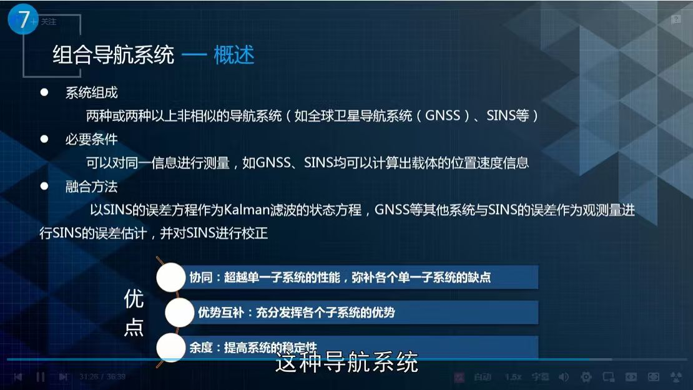
此图概括了自动驾驶中组合导航系统的基本组成、原理与核心优势。
Q: 什么是组合导航系统？其核心技术逻辑是什么？
A: 组合导航通过融合多种非相似传感器数据，实现性能的互补与增强：
1. 基本定义: 由两种或以上非相似导航系统（如 GNSS 与 SINS）组成的联合体。
2. 必要条件: 各子系统需能针对同一物理信息（如位置、速度）提供可用于计算的测量结果。
3. 核心融合方法: 采用卡尔曼滤波 (Kalman Filter) 框架，以 SINS 的误差方程作为状态方程，将 GNSS 等系统的输出差异作为观测测量量，实现对 SINS 漂移误差的实时估计与校正。
4. 三大核心优势:
- 协同效应: 超越单一系统的物理局限，弥补彼此性能短板。
- 优势互补: 充分利用各传感器在高频采样、长时定位稳定性等不同维度的特长。
- 系统余度: 显著提升系统的整体稳定性与容错能力。
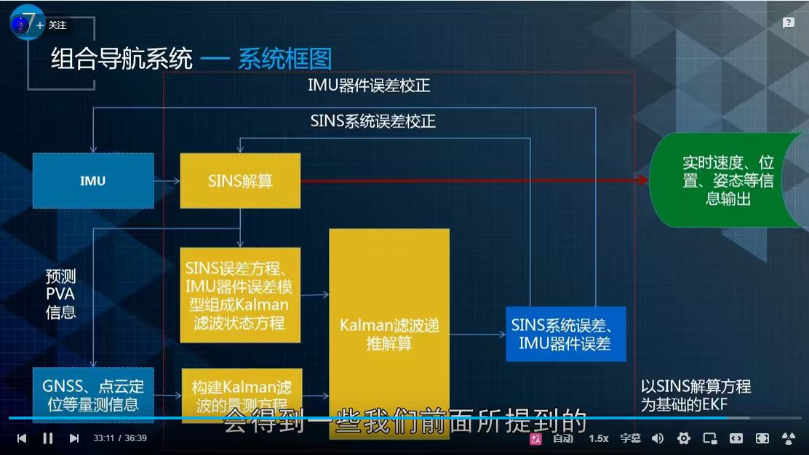
此图详细展示了 Apollo 组合导航系统的卡尔曼滤波闭环控制框图。
Q: 组合导航系统的闭环解算逻辑是什么？
A: 该系统以 SINS 捷联惯导为基础，通过扩展卡尔曼滤波 (EKF) 进行闭环误差校准：
1. 状态推算: 由 IMU 数据经 SINS 解算得到实时 PVA (位置、速度、姿态) 信息。
2. 预测与观测: 结合来自 GNSS、点云定位的量测信息，构建“SINS 误差方程 + IMU 器件误差模型”作为卡尔曼滤波的状态方程。
3. 闭环校准: 卡尔曼滤波递推解算出 SINS 系统误差与 IMU 器件误差，并反馈回路对 SINS 与 IMU 进行实时校准，最终输出经过滤波修正的高可靠性定位信息。
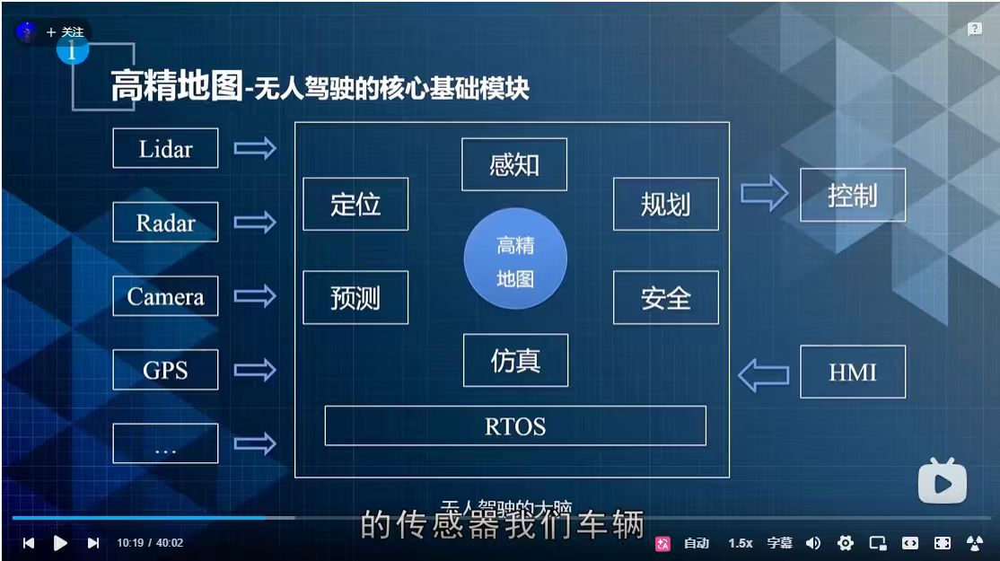
此图阐述了高精地图 (HD Map) 在无人驾驶系统架构中的核心支撑作用。
Q: 为什么称高精地图为无人驾驶的核心基础模块？
A: 如图所示，高精地图处于自动驾驶核心软件平台的中心枢纽位置：
- 枢纽地位: 它不仅作为感知、定位、预测、规划与安全模块的共同基础，还与仿真、RTOS 深度协同，构成了软件平台的“基石”。
- 感知支撑: 结合传感器（Lidar, Radar, Camera, GPS 等）输入的实时数据，高精地图提供了预先构建的先验环境模型。
- 全系统融合: 其作为核心枢纽，连接了从传感器感知到后端控制的闭环链路，确保了在复杂城市环境下的全局规划与高精度定位能力。
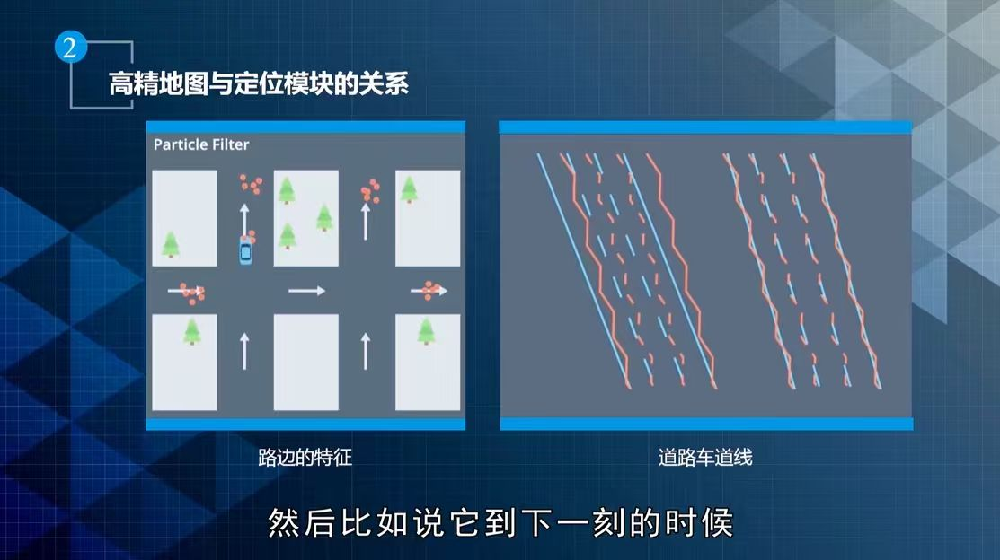
此图通过直观的可视化分析，揭示了高精地图如何辅助定位模块解决实时位姿解算问题。
Q: 高精地图如何协同定位模块工作？
A: 定位过程实质上是“实时感知”与“地图先验信息”的动态匹配过程：
1. 左侧 - 路边特征匹配 (Landmark-based): 通过识别环境中固定的静态特征（如路边的树木），利用粒子滤波 (Particle Filter) 在地图中进行搜索，通过大量粒子代表的假设位姿与观测特征比对，实时收敛定位坐标。
2. 右侧 - 道路车道线匹配 (Lane-line-based): 将实时探测到的车道线（红色/橙色波浪线）与高精地图预置的车道线（蓝色直线）进行比对。通过计算二者的偏离度，实时修正车辆的横向偏移与航向角。
总结: 这种双重匹配逻辑（基于地物的宏观位姿解算 + 基于车道线的微观车道级对齐）共同保证了自动驾驶系统在动态环境中实现高精度、高稳定性的持续定位。
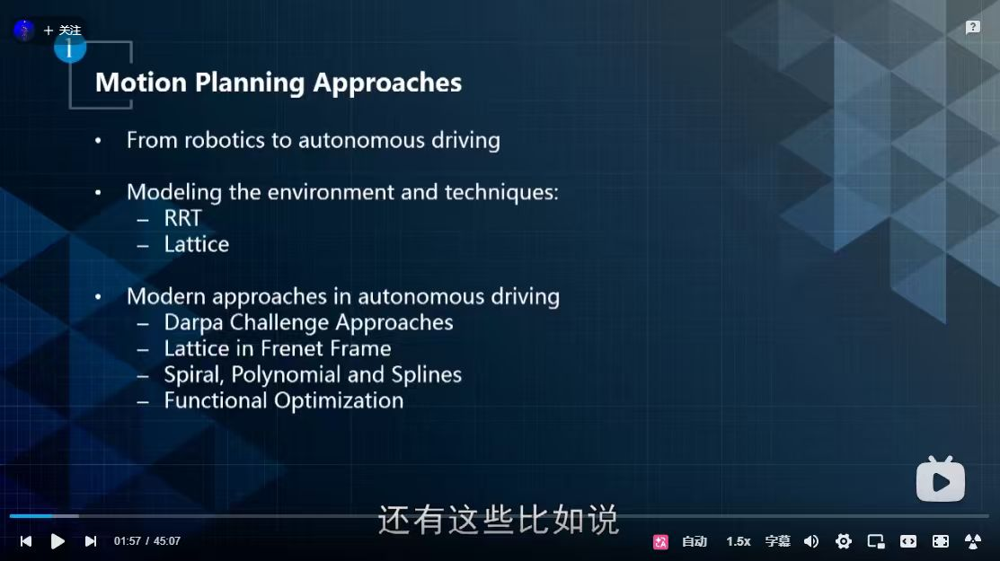
此图梳理了从传统机器人学到现代自动驾驶领域的运动规划演进路径。
Q: 运动规划方法是如何演进的？
A: 运动规划方法历经了从基础研究到工业级应用的跨越：
1. 机器人学背景: 早期的环境建模主要依赖 RRT (快速扩展随机树) 和 Lattice (格点规划) 等传统机器人算法。
2. 自动驾驶演进: 现代自动驾驶针对复杂的道路约束，衍生出更专用的规划技术：
- Darpa Challenge Approaches: 奠定了自动驾驶规划的早期基础。
- Frenet Frame 下的 Lattice: 将空间坐标转换至道路 Frenet 坐标系，更符合车辆在道路上的行驶特性。
- 曲线拟合 (Spiral, Polynomial, Splines): 利用螺旋线、多项式及样条函数构建平滑且符合动力学约束的轨迹。
- 函数优化 (Functional Optimization): 通过定义代价函数并进行最优解求解，直接优化轨迹的安全性、舒适度与高效性。
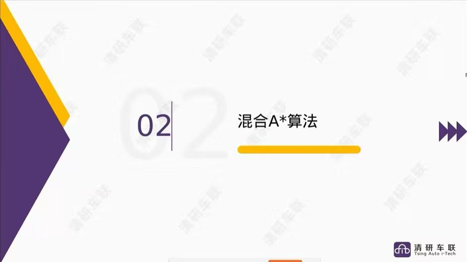
此图为混合 A* 算法 (Hybrid A*) 课件的标题页。
Q: 为什么混合 A* 算法在自动驾驶规划中至关重要？
A: 混合 A* 是解决复杂环境车辆路径规划的核心算法：
- 核心挑战: 传统 A* 算法在网格空间搜索时，生成的路径往往不满足车辆的非完整性约束 (Non-holonomic constraints)，即车辆无法在网格边界原地旋转。
- 算法特性: 混合 A* 在搜索过程中不仅考虑位置 (x, y)，还引入了车辆的朝向角 (yaw) 作为状态变量，使得生成的路径在几何上满足车辆的最小转弯半径要求。
- 应用场景: 广泛应用于自主泊车 (Valet Parking)、复杂园区内的无人作业路径生成等场景，确保规划出的路径能够被车辆控制器精准执行。